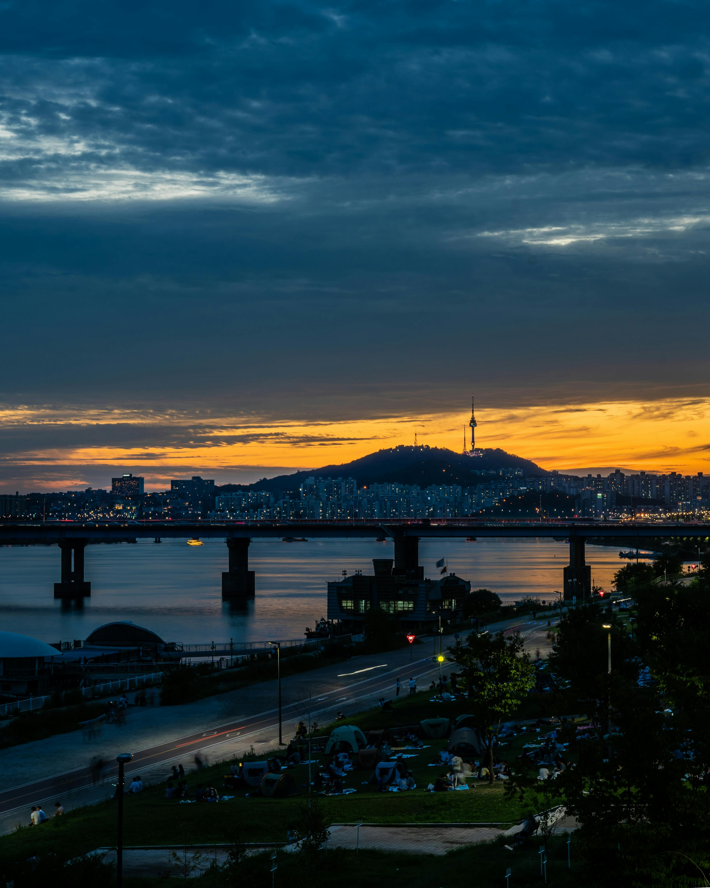
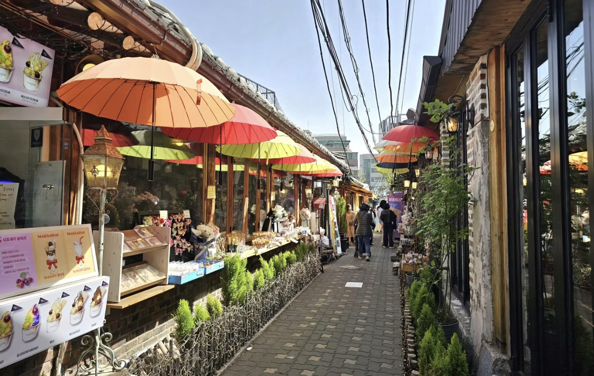
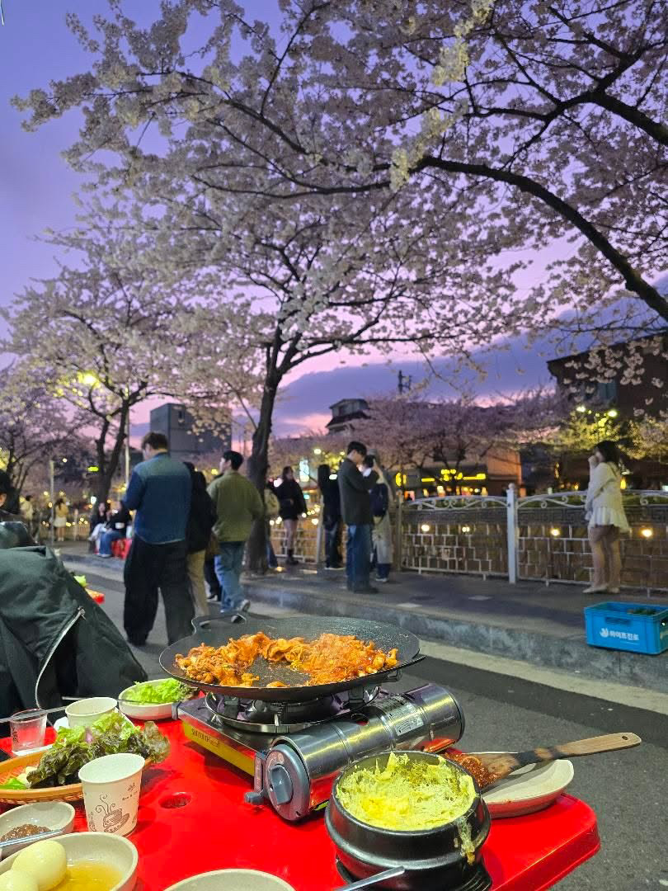
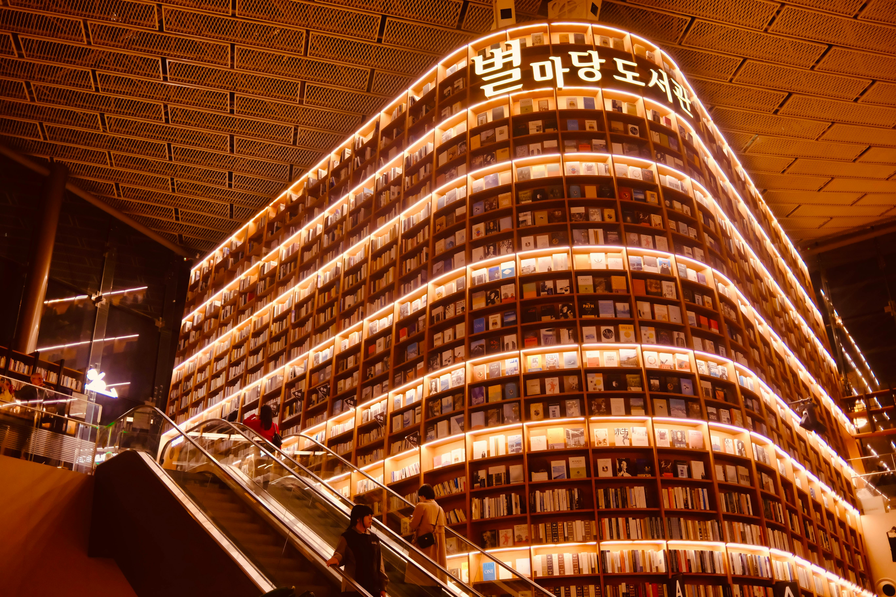

Small Tips
- Four distinct seasons with unique charms
- World-class food and vibrant nightlife
- Seamless and efficient public transportation
- Spring is ideal for visiting, but snowy winter days are wonderful too
Han River

The Han River is one of the most iconic places in Seoul, loved by both locals and visitors.
Stretching across the city, it offers beautiful views, relaxing parks, and a lively atmosphere throughout the day and night.
People often visit the Han River to enjoy picnics, bike rides, late-night walks, and outdoor gatherings with friends.
Enjoy a variety of Korean food truck snacks while experiencing Seoul's unique atmosphere!!
For more information, visit the Seoul Metropolitan Government
Ikseondong

Ikseondong is a vibrant neighborhood where traditional hanok houses blend seamlessly with modern cafés, restaurants, and boutiques.
Its
narrow alleyways are packed with unique stores and cozy outdoor spaces, offering a special atmosphere where visitors can soak in both
heritage and modern city vibes. Beloved by locals and tourists alike, Ikseondong is famous for its photogenic streets, trendy spots, and
relaxing ambiance.
Recommended Places & Menu:
- Cheongsudang Bakery
- Strawberry Compote Souffle Castella ⭐️⭐️⭐️⭐️⭐️ - Cafe Highwaist
- Teddy Scone ⭐️⭐️⭐️⭐️⭐️
- Scotch Latte ⭐️⭐️⭐️⭐️ - Ikseon Atteut
- Pork Ssam with Doenjang Sauce ⭐️⭐️⭐️⭐️⭐️
- Chadolbagi & Chive Spicy Mixed Noodles ⭐️⭐️⭐️⭐️
For more information, visit KoreaToDo
Seongbukcheon Stream

Seongbukcheon Stream is one of the most popular streams in Seoul for walking, running, and biking. Flowing through the center of the city,
it offers a small escape into nature while still being surrounded by lively urban streets.
During spring, cherry blossoms bloom
beautifully along the stream, and the area becomes especially famous for its outdoor dining culture, where people enjoy food and late-night
gatherings at tables set outside nearby restaurants.
Many locals and visitors come to Seongbukcheon to enjoy the outdoor atmosphere
and relaxing scenery. It is also a great place to spend time with friends and experience the afternoon and nighttime vibes of Seoul.
For more information, visit PLOY'S LITTLE ATLAS
COEX

COEX is one of Seoul’s most famous shopping and cultural complexes, located in the Gangnam area. The space is filled with large shopping
malls, restaurants, cafes, exhibition halls, and many other attractions, making it a popular place that is always crowded with visitors.
One of the most famous spots inside COEX is the Starfield Library, known for its towering bookshelves and modern interior design, making it
a favorite photo spot for many. This place is also well known for hosting various pop-up stores and special events. It is directly connected
to public transportation, making it very convenient and accessible.
Recommended Places & Menu:
- COEX Aquarium ⭐️⭐️⭐️⭐️⭐️
-
Icheon Garden
- Pork Soy Sauce Bulgogi with Rice ⭐️⭐️⭐️⭐️
- Steak Dish Set with Rice ⭐️⭐️⭐️⭐️⭐️
- Kimchi Stew Dish Set with Rice ⭐️⭐️⭐️⭐️⭐️
For more information, visit The Soul of Seoul